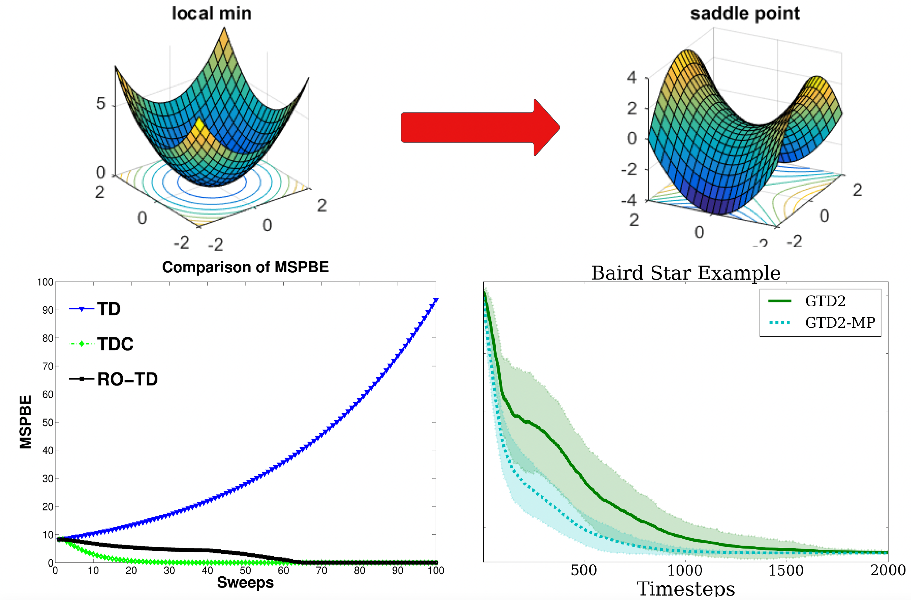
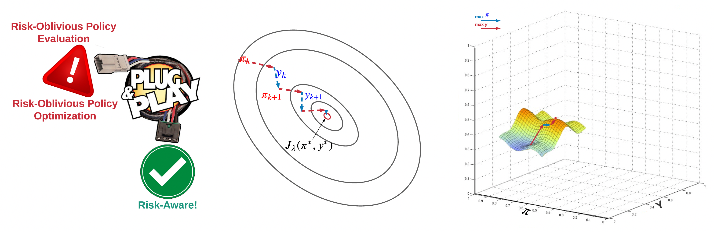
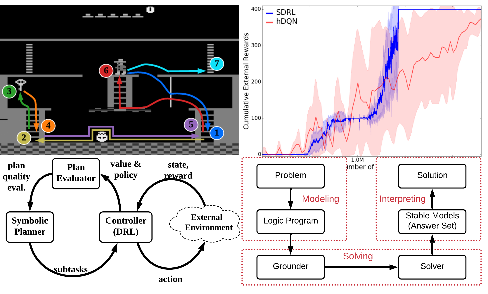
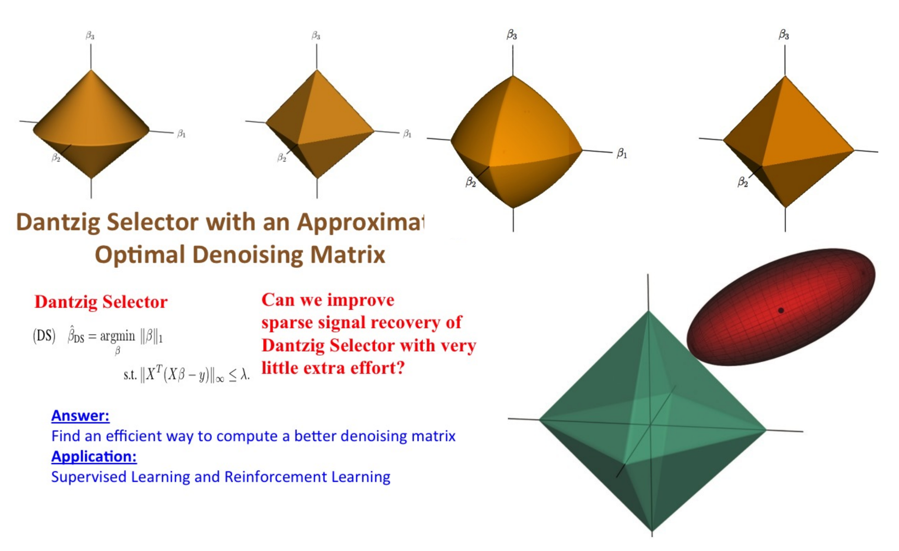

Selected Projects
I am interested in some fundamental problems of RL and AI, and fortunate enough to have some outcomes we are particularly proud of

Counterfactual Prediction and Control: Humans and robots learn to perceive and interact with the world via real-time interactions. Can they do this not by real-time interactions but by learning only from past experiences? This is challenging since the past experience may be very different from the current scenario, which is termed "counterfactual."
Technical contributions:
Off-policy stable prediction algorithms in sequential decision-making, and their sample complexity analysis.
Off-policy policy gradient theorem with function approximation, and counterfactual density ratio estimation.
Publications:
[UAI'2015 best student paper award]
[IJCAI'2016]
[JAIR'2018]
[IEEE-TNN'2018]
[ICML'2020a (COFPAC)]
[ICML'2020b (GradientDICE)]
Impact:
UAI Facebook Best Student Paper Award, 2015[video]
Results included in the classical textbook "Reinforcement Learning: An Introduction" (Sutton & Barto, 2nd edition)
More than 400 citations from worldwide

Risk-Aware Control: Autonomous driving has become a billion-dollar business. An applicable autonomous driving system must be risk-aware to avoid accidents. Same for stock market investment, where risk management is critical in order not to go bankrupt. All these problems can be formulated as risk-aware control under uncertainty and stochasticity.
Technical contributions:
Mean-Variance optimization with sample complexity analysis.
"Magic" meta-algorithms that can turn any off-the-shelf risk-oblivious ones into risk-aware.
Publications:
[NeurIPS'18]
[AAAI'2021]
Impact:
Best Paper Award at AAMAS-22 13th OptLearnMAS Workshop, 2022
One of the most popular tutorials in UAI'2022

Explainable and Reasonable AI: Existing AI is powerful and everywhere. But it is like a magic black-box: maybe you know what and how it will do, but you don't know "why". Does it matter to know "why"? Yes! Knowing "why" brings us confidence, and helps us understand AI better.
Technical contributions:
Explainable AI, decision-making, and reasoning.
For complicated raw tasks, how to conduct explainable task decomposition into "primitive" subtasks and task reduction.
Publications:
[IJCAI'2018]
[AAAI'2019]
[ICLP'2019]
[IEEE-TETCI'2021]
[Neuro-Symbolic AI book chapter'2021]

Sparse RL: Sparsity is the eternal interest of statistics as it leads to robustness, simplicity, and interpretability of the learned model. So why not having sparsity in RL?:)
Technical contributions:
Reinforcement learning with first-order sparsity (e.g., proximal gradient and mirror descent), power series method (e.g., Krylov method), and linear program (e.g., Dantzig Selector).
Publications:
[NIPS'2010]
[NIPS'2012]
[UAI'2012]
[UAI'2016]
[AAAI'2016]
Impact:
NIPS Spotlight Presentation, 2022[video]